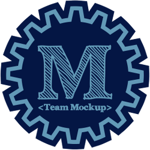
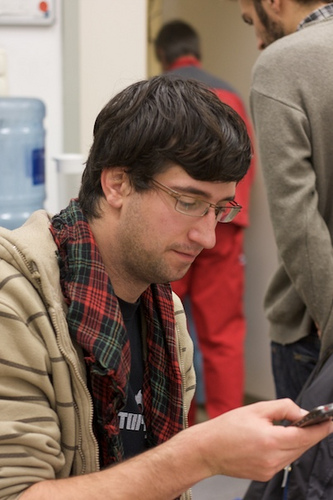
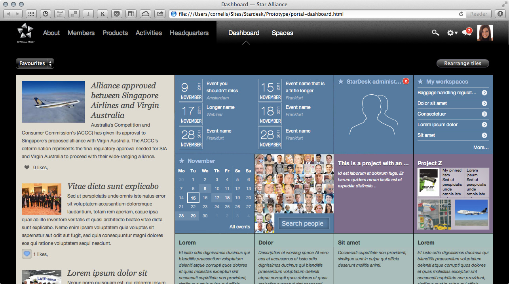

Patternslib lets you enhance the functionality of your website, without having to know or care about Javascript.
What is Patternslib?
Library of interaction patterns
Toolkit for writing, packaging and loading JS modules as patterns
A front-end development paradigm
Interaction patterns are reusable, configurable and composable
descriptions of UI functionality.
Declared through special combinations of HTML classes and data-attributes
For example, toggling CSS classes
This is getting toggled
<p><span class="orange" id="toToggle">This is getting toggled</span></p>
<button class="pat-toggle" data-pat-toggle="selector: #toToggle; value: orange blue">
Toggle color
</button>
Ok, so what is Mockup?

Mockup is a hard fork, done specifically for Plone.
Patternslib
Plone
Mockup
Why was it forked?
To answer, let's first look at how Mockup came about
Scene:Balcony Hall of the Musis Sacrum, in Arnhem, the Netherlands.
Time:Friday, October 12, 2012.
The designer Cornelis Colbach is demoing Patternslib.

Plone developer Rok Garbas sees it, is excited by the possibilities and wants patterns for Plone.
December 2012:Rok starts Mockup ("patterns for plone") and integrates it into plone.app.widgets
Early in 2013, Rok Writes:
Mockup: I got upset with how Javascript is (ab)used in Plone. Not 100% sure
where this project is heading, but we need to change our attitude towards
Javascript. I hope others feel similar and would join the effort.
in which he explains the choice of using Patternslib as basis for widgets in Plone.
March 2013:Rok proposes a PLIP to include Mockup into core Plone.
"Reimplementation" of current javascript found in Plone core --
this code is not getting rewritten in it's entirety, but getting
transformed into patterns as part of the Mockup project so that it
can be encapsulated and tested.
Rok Garbas
December 2013:Rok makes a hard fork by creating mockup-core.
Rewrites core components.
Breaks compatibility with Patternslib
June 2014:
Rok steps down as maintainer.
Last commit to Mockup is on May 22, 2014.
Later in 2014:
Nathan van Gheem takes over as Mockup maintainer.
Notable work also done by Franco Pellegrini and Johannes Raggam.
So, why did Rok fork?
To understand Rok's stated reasons for forking,
we need to take a look at the core components of Patternslib
What does Patternslib consist of?
Core components
Registry (including a scanner)
Parser
Loader (pattern initializer)
The individual interaction patterns
Rok's stated reasons for the fork
Reason #1
Didn't like Patternslib's configuration syntax
Makes parser more complex
Means more documentation
"avoid to learn new things as much as possible"
Patternslib's configuration is meant to emulate CSS
Lowest common denominator between designers and developers.
Consider this CSS
/* These rules... */
background-repeat: no-repeat;
background-position: center;
background-image: url("../img/image.png");
/* Can be rewritten as one rule */
background: no-repeat center url("../img/image.png");
The patternslib analogy
/* Written out */
<div data-pat-navigation="control-startstop: true; control-nav: true">...</div>
/* Shorter version */
<div data-pat-navigation="control: startstop nav">...</div>
Patterns also had a shorthand notation (rarely used)
Naive: accepts anything that looks like configuration
Rok's stated reasons for the fork
Reason #2
Wanted to scan patterns outside in
Cuts down on complexity
Rok's stated reasons for the fork
Reason #3
Difficulty keeping up with changes upstream
Meanwhile, Patternslib development continues and sees deployment in various sites.
1st half of 2014:
The Plone Intranet consortium is created and Plone Intranet is started. Based on Patternslib.
Why choose Patternslib?
Stardesk - intranet for Star Alliance

Status Quo in 2014
So now we had two patterns-like projects, duplicating each others functionality and incompatible with one another.
And both were being used in important Plone projects (Plone 5 and Plone intranet).
It gets worse
Not possible to use both libraries at once.
Mockup kept same naming convention.
Both libraries register, parse and initialize same patterns.
Also... name clashes, mockup's patterns have the same names.
pat-inject
pat-toggle
pat-sortable
pat-modal
pat-tooltip
Other challenges
Confusion reigns within the Plone community.
Scarce developer attention and resources are split across two projects.
Lots of work was being duplicated.
We needed to get Patternslib and Mockup back together again.
January 2015:Alpine City Sprint
Changes made at the Alpine City Sprint
Updated Mockup patterns to handle inside-out scanning
Merged the registries
Loader now handled how Mockup patterns are initialized
Couldn't merge the parser
Both Patternslib and Mockup patterns could now again be used in the same website (except when their names clash).
September 2015:Munich Plone 5 theming sprint
Work done at Munich Plone 5 theming sprint
Mockup base pattern merged into Patternslib
mockup-core finally removed from Mockup.
Features taken from Mockup
Base Pattern
JSON configuration of patterns
Some issues remain
Parser couldn't be merged.
Different naming conventions.
config-name versus configName
Duplicate patterns cause name-clashes
Different approach
Developer-centric versus designer-centric
The Mockup project is now simply a specific collection of Patternslib patterns.
Goals achieved and what's still to do
[*] Deprecate mockup-core and merge into Patternslib
[*] Get Mockup to rely on Patternslib instead
[*] Provide a template for writing patterns
[ ] Remove unnecessary, duplicate patterns
[ ] Update Mockup patterns to use the Patternslib parser
[ ] Move generic patterns out of Mockup
[ ] Easily expose and start using Patternslib patterns in Plone
[ ] Update documentation
Was the fork worth it?
Why it might be good to fork
Advantages of forks
Forks foster competition
Forks allow experimentation
A fork can rectify a social, legal or policy issue
Why it might be bad to fork
Costs of the fork
Sunk costs
Cost of merging
Opportunity cost
Developer/Resource dilution
FUD and Confusion
What alternatives where there to forking?
What alternatives where there to forking?
Get your work merged upstream
Add your own features but maintain compatibility
More of a social challenge than a technical challenge
I wrote few jQuery plugins to improve UX in Plone and then started a re-write
of Plone's front-end called Mockup, which was (is!) more of a social than
technical challenge.
Rok Garbas